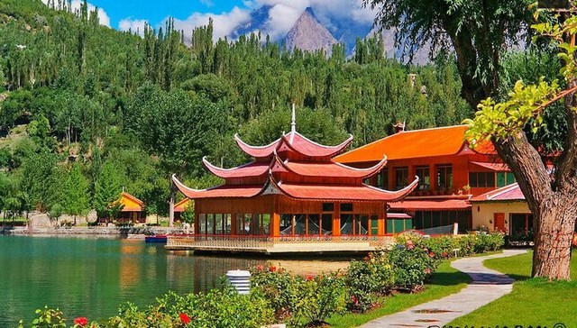
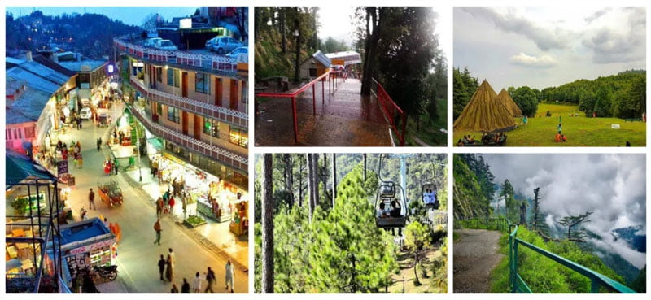
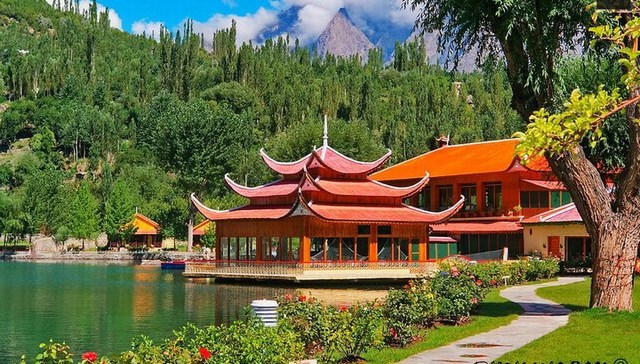
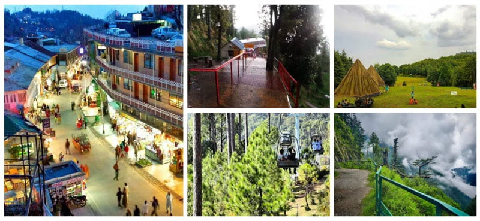

Photo Collection
Here are some beautiful pictures pictures from my journey across Pakistan. Each place holds a special story
and peaceful vibe.Capture the beauty of nature!
 



PLaces and Information
| Place | Specialty |
|---|---|
| Hunza | Mountain Views & Warm People |
| Skardu | Lakes & Advetures Sports |
| Murree | Snowfall & Family Destination |
For more information on tourism in Pakistan,
visit: Tourism in Pakistan.